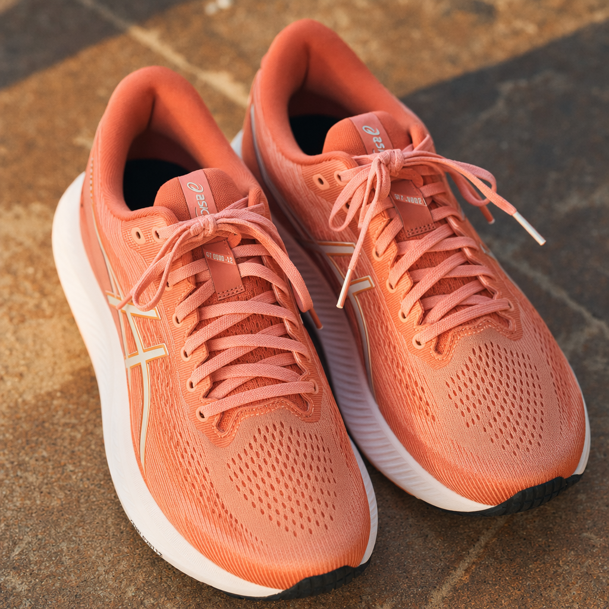
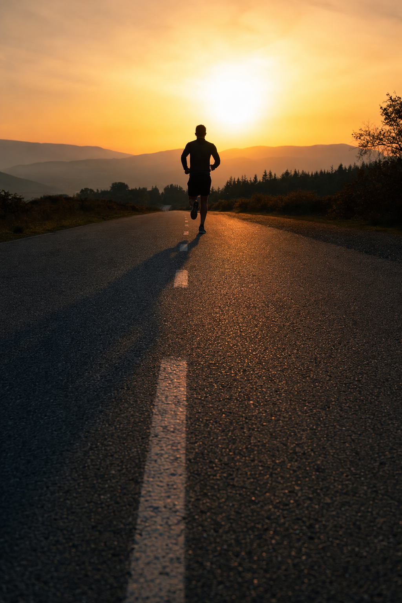

STRIDE
STRIDE01 / 07
04
Bold quotes to fuel your next run
For the days your legs say no but your heart says one more mile.
Swipe for motivation →

 STRIDE
STRIDE02 / 07
Quote 01
The run doesn't get easier. You get stronger.
Lace up. Show up. Repeat.
STRIDE03 / 07
Quote 02
Some days you run for time. Some days you run for peace.
Every pace counts.
Keep going
Halfway is just the beginning of the good part.
STRIDE04 / 07

STRIDE05 / 07
Quote 03
Slow miles still count. Show up anyway.
Progress, not perfection.
STRIDE06 / 07
Quote 04
You are not behind. You are exactly where your training is.
Trust the process.
STRIDE07 / 07
Your next run starts with your next step
Come back for more fuel on the days your motivation runs low.
Save this for your next run